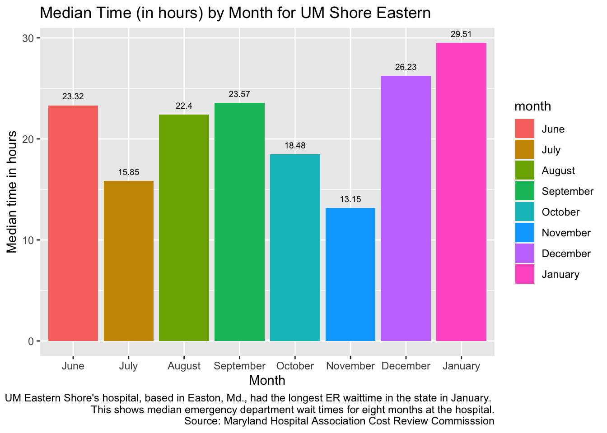
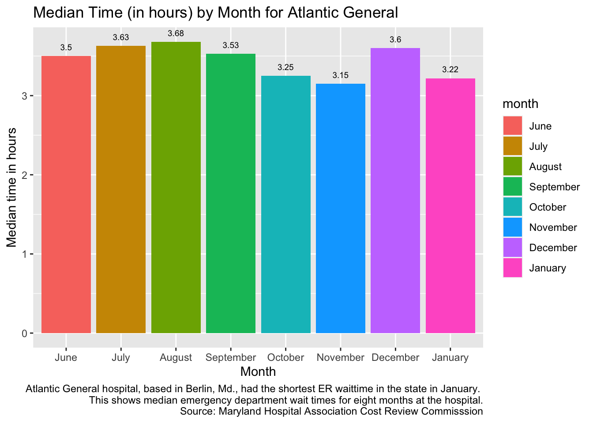
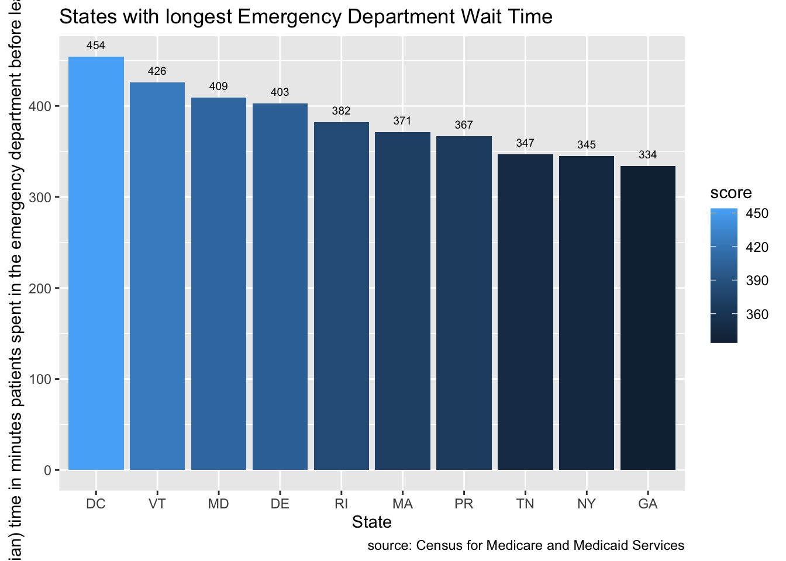
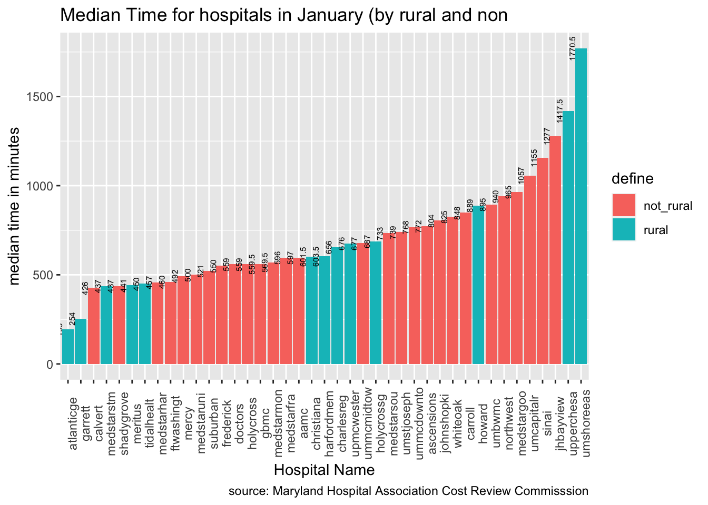

In June, the Maryland Hospitals Association established EDDIE, the Emergency Department Dramatic Improvements Effort, to address hospital wait times in the state. By having each hospital set objectives for lowering emergency department wait times and discharges, EDDIE aims to put Maryland hospitals back on target with the rest of the country. Now, the state has one of the highest average wait times in the country. EDDIE has been collecting monthly data on each Maryland hospital’s average wait times, and I have that data from July 2023 through January 2024, provided by a request to the Maryland Hospital Association.
The data provided by the MHA is fairly large and consists of numerous variables.
ED1 refers to emergency department “arrival to inpatient a admission time” and OP refers outpatients who are discharged into the community for “outpatient ED arrival to discharge time” according to Damiara Smith, a quality fellow for the MHA cost review commission.
For this project, I have chosen to analyze the aggregated psych and non-psych sheet columns to measure hospital patient arrival to emergency department admission on a general basis for all patients, as opposed to psych or non-psych.
Research Questions:
What are the average wait times for each hospital across the state in January in hours? As of January, what is month over month wait time for the hospitals with the longst and shortest wait times?
What hospitals in Maryland are seeing the most and least improvement in wait times? 1a. Which 5 hospitals had the lowest percent change since base month? 1b. How many hospitals have had increasing wait times from their base month to January? Which 5 have had the biggest increases?
How does Maryland’s average ED wait time compare to the rest of the country?
Are there any patterns between urban and rural hospitals? What factors affect wait times in each of these areas?
What hospital has seen the most improvement (and least) in its hospital wait times?
#Data Notebook
Q1: What hospitals in Maryland are seeing the most and least improvement? Which 5 hospitals had the lowest percent change since August?
#A - Load librarieslibrary(tidyverse)
── Attaching core tidyverse packages ──────────────────────── tidyverse 2.0.0 ──
✔ dplyr 1.1.4 ✔ readr 2.1.5
✔ forcats 1.0.0 ✔ stringr 1.5.1
✔ ggplot2 3.4.4 ✔ tibble 3.2.1
✔ lubridate 1.9.3 ✔ tidyr 1.3.1
✔ purrr 1.0.2
── Conflicts ────────────────────────────────────────── tidyverse_conflicts() ──
✖ dplyr::filter() masks stats::filter()
✖ dplyr::lag() masks stats::lag()
ℹ Use the conflicted package (<http://conflicted.r-lib.org/>) to force all conflicts to become errors
library(rio)library(janitor)
Attaching package: 'janitor'
The following objects are masked from 'package:stats':
chisq.test, fisher.test
[conflicted] Will prefer dplyr::filter over any other package.
conflict_prefer("lag", winner ="dplyr")
[conflicted] Will prefer dplyr::lag over any other package.
library(dplyr)library(stringr)
#B - Import the dataED1a <- rio::import("EDDIE January FINAL.xlsx", sheet="ED1a")
New names:
• `` -> `...21`
ED1a <-clean_names(ED1a)
Q1: What are the average wait times for each hospital across the state in January in hours? As of January, what is month over month wait time for the hospitals with the longst and shortest wait times?
#Heat map of hospitalsjanuary_ed <- ED1a %>%select(abbreviated_name, january_median) %>%mutate(address = abbreviated_name) %>%head(41)january_ed$address<-gsub("Frederick", "400 W 7th St, Frederick, MD 21701", january_ed$address)january_ed$address<-gsub("Carroll", "200 Memorial Ave, Westminster, MD 21157", january_ed$address)january_ed$address<-gsub("Atlantic General", "9733 Healthway Dr, Berlin, MD 21811", january_ed$address)january_ed$address<-gsub("Garrett", "251 N 4th St, Oakland, MD 21550", january_ed$address)january_ed$address<-gsub("MedStar St. Mary's", "25500 Point Lookout Rd, Leonardtown, MD 20650", january_ed$address)january_ed$address<-gsub("Calvert", "100 Hospital Rd, Prince Frederick, MD 20678", january_ed$address)january_ed$address<-gsub("Meritus", "11116 Medical Campus Rd, Hagerstown, MD 21742", january_ed$address)january_ed$address<-gsub("MedStar Union Memorial", "201 E University Pkwy, Baltimore, MD 21218", january_ed$address)january_ed$address<-gsub("ChristianaCare, Union", "106 Bow St, Elkton, MD 21921", january_ed$address)january_ed$address<-gsub("TidalHealth Peninsula", "100 E Carroll St, Salisbury, MD 21801", january_ed$address)january_ed$address<-gsub("GBMC", "19801 Observation Dr, Germantown, MD 20876", january_ed$address)january_ed$address<-gsub("Holy Cross Germantown", "251 N 4th St, Oakland, MD 21550", january_ed$address)january_ed$address<-gsub("HARFORD MEMORIAL", " 501 S Union Ave, Havre De Grace, MD 21078", january_ed$address)january_ed$address<-gsub("Ft. Washington", "11711 Livingston Rd, Fort Washington, MD 20744", january_ed$address)january_ed$address<-gsub("Shady Grove", "9901 Medical Center Dr, Rockville, MD 20850", january_ed$address)january_ed$address<-gsub("Mercy", "301 St Paul St, Baltimore, MD 21202", january_ed$address)january_ed$address<-gsub("UPMC Western MD", "12500 Willowbrook Rd, Cumberland, MD 21502", january_ed$address)january_ed$address<-gsub("Suburban", "8600 Old Georgetown Rd, Bethesda, MD 20814", january_ed$address)january_ed$address<-gsub("MedStar Montgomery", "18101 Prince Philip Dr, Olney, MD 20832", january_ed$address)january_ed$address<-gsub("CHARLES REGIONAL", "5 Garrett Ave, La Plata, MD 20646", january_ed$address)january_ed$address<-gsub("MedStar Franklin Square", "9000 Franklin Square Dr, Baltimore, MD 21237", january_ed$address)january_ed$address<-gsub("MedStar Harbor", "3001 S Hanover St, Baltimore, MD 21225", january_ed$address)january_ed$address<-gsub("Holy Cross", "1500 Forest Glen Rd, Silver Spring, MD 20910", january_ed$address)january_ed$address<-gsub("Doctors", "2121 Medical Park Dr, Silver Spring, MD 20902", january_ed$address)january_ed$address<-gsub("AAMC", "2001 Medical Pkwy, Annapolis, MD 21401", january_ed$address)january_ed$address<-gsub("MedStar Good Samaritan", "5601 Loch Raven Blvd, Baltimore, MD 21239", january_ed$address)january_ed$address<-gsub("MedStar Southern Maryland", "7503 Surratts Rd, Clinton, MD 20735", january_ed$address)january_ed$address<-gsub("Ascension Saint Agnes", "900 S Caton Ave, Baltimore, MD 21229", january_ed$address)january_ed$address<-gsub("UM ST. JOSEPH", "7601 Osler Drive Towson, MD 21204", january_ed$address)january_ed$address<-gsub("UMMC Downtown", "22 S Greene St, Baltimore, MD 21201", january_ed$address)january_ed$address<-gsub("Northwest", "5401 Old Court Rd, Randallstown, MD 21133", january_ed$address)january_ed$address<-gsub("UMMC MIDTOWN", "800 Linden Ave 10th Floor, Baltimore, MD 21201", january_ed$address)january_ed$address<-gsub("Johns Hopkins", "1800 Orleans St, Baltimore, MD 21287", january_ed$address)january_ed$address<-gsub("UM BWMC", "301 Hospital Dr, Glen Burnie, MD 21061", january_ed$address)january_ed$address<-gsub("Howard", "2041 Georgia Ave NW, Washington, DC 20060", january_ed$address)january_ed$address<-gsub("Sinai", "2401 W Belvedere Ave, Baltimore, MD 21215", january_ed$address)january_ed$address<-gsub("UPPER CHESAPEAKE", "500 Upper Chesapeake Dr, Bel Air, MD 21014", january_ed$address)january_ed$address<-gsub("UM CAPITAL REGION", "901 Harry S Truman Dr, Largo, MD 20774", january_ed$address)january_ed$address<-gsub("White Oak", "11890 Healing Wy, Silver Spring, MD 20904", january_ed$address)january_ed$address<-gsub("JH Bayview", "4940 Eastern Ave, Baltimore, MD 21224", january_ed$address)january_ed$address<-gsub("UM SHORE EASTON", "219 S Washington St, Easton, MD 21601", january_ed$address)#Some of the addresses over rode themsleves (for example in TidalHealth Peninsula hospital, "Carrol" in Caroll Street was overrode by Carroll hospital's address. I fixed this in the csv file before uploading to Data Wrapper)
DO NOT RUN #install.packages(“ggmap”) library(ggmap) register_google(key = “XXXXX”)
Map from data wrapper: https://app.datawrapper.de/map/BTfas/publish
january_ed$address_back <- january_ed$addressjanuary_ed<-separate(january_ed, col = address_back, into =c("street", "city", "zip"), sep =",", extra ="merge", fill ="right") %>%mutate(city=str_squish(city))january_ed <-separate(january_ed, col = zip, into =c("state", "zip"), sep ="MD ")
Warning: Expected 2 pieces. Missing pieces filled with `NA` in 1 rows [35].
#Hospital with longest wait time in Januarylongest <- ED1a %>%select(abbreviated_name, january_median) %>%arrange(desc(january_median))#In January, University of Maryland Shore Eastern in Easton, Md. (Talbot County) had the longest wait time at 1770.5 minutes, or 29.5 hours.longest_graph <- rio::import("EDDIE January FINAL.xlsx", sheet="UMES")longest_graph <-clean_names(longest_graph)longest_graph <- longest_graph %>%mutate(month_order=month) longest_graph <- longest_graph %>%mutate(month_order =case_when( month =="June"~"1", month =="July"~"2", month =="August"~"3", month =="September"~"4", month =="October"~"5", month =="November"~"6", month =="December"~"7", month =="January"~"8" ))longest_graph <- longest_graph %>%mutate(median_hour =round(median/60,2))longest_graph$month <-factor(longest_graph$month, levels =c("June", "July", "August", "September", "October", "November", "December", "January"))longest_graph %>%ggplot(aes(x=month, y=median_hour, weight=median_hour, fill=month)) +geom_col()+geom_text(aes(label=median_hour), vjust =-1, size =2.5) +labs(title="Median Time (in hours) by Month for UM Shore Eastern",x ="Month",y ="Median time in hours",caption ="UM Eastern Shore's hospital, based in Easton, Md., had the longest ER waittime in the state in January. This shows median emergency department wait times for eight months at the hospital. Source: Maryland Hospital Association Cost Review Commisssion")

#Hospital with shortest wait time in Januaryshortest <- ED1a %>%select(abbreviated_name, january_median) %>%arrange(january_median)#In January, Atlantic General, located in Berlin, Md (Worcester County) had the shortest wait time at 193 minutes, or about 3.2 hours.shortest_graph <- rio::import("EDDIE January FINAL.xlsx", sheet="AG")shortest_graph <-clean_names(shortest_graph)shortest_graph <- shortest_graph %>%mutate(month_order=month) shortest_graph$month_order <-gsub("June", "1", shortest_graph$month_order)shortest_graph$month_order <-gsub("July", "2", shortest_graph$month_order)shortest_graph$month_order<-gsub("August", "3", shortest_graph$month_order)shortest_graph$month_order <-gsub("September", "4", shortest_graph$month_order)shortest_graph$month_order <-gsub("October", "5", shortest_graph$month_order)shortest_graph$month_order <-gsub("November", "6", shortest_graph$month_order)shortest_graph$month_order <-gsub("December", "7", shortest_graph$month_order)shortest_graph$month_order <-gsub("January", "8", shortest_graph$month_order)shortest_graph <- shortest_graph %>%mutate(median_hour =round(median/60, 2))shortest_graph$month <-factor(shortest_graph$month, levels =c("June", "July", "August", "September", "October", "November", "December", "January"))shortest_graph %>%ggplot(aes(x=month, y=median_hour, weight=median_hour, fill=month)) +geom_col()+geom_text(aes(label=median_hour), vjust =-1, size =2.5) +labs(title="Median Time (in hours) by Month for Atlantic General",x ="Month",y ="Median time in hours",caption ="Atlantic General hospital, based in Berlin, Md., had the shortest ER waittime in the state in January. This shows median emergency department wait times for eight months at the hospital. Source: Maryland Hospital Association Cost Review Commisssion")

Findings from charts:
Atlantic General in Berlin, Md. had the highest median wait time in January, and UM Eastern Shore in Easton, Md. had the longest median wait time that month.
Atlantic General had a significantly shorter average wait time (of about 3.2 hours in its emergency department, which is still long) than UM Eastern Shore at 29.5 hours. The variation in Eastern Shore’s times was also a significantly larger range. I was shocked to see that from November to January, UM Eastern Shore’s wait time increased by almost 1000 minutes on average.
From this data, I would want to talk to someone at each hospital to ask what was going on. I’d also be interested in talking to people who visited UM Eastern Shore and waited 1700 minutes (over 28 hours) to be seen in an emergency room.
I also want to look into UM Eastern Shores’ outlined objectives and goals for decreasing times that are required to be stated under the new EDDIE program. How does the hospital’s objectives relate to the reality of its extremely flunctuating wait times for patients.
Q2: What hospitals in Maryland are seeing the most and least improvement in wait times? 1a. Which 5 hospitals had the lowest percent change since base month? 1b. How many hospitals have had increasing wait times from their base month to January? Which 5 have had the biggest increases?
Pct_change <- ED1a %>%select(abbreviated_name, august_median, january_median) Pct_change <- Pct_change %>%select(abbreviated_name,august_median, january_median) %>%mutate(base_august= (january_median - august_median)/august_median *100) Pct_change_top5 <- Pct_change %>%arrange(base_august) %>%head(5)#Answer: White Oak in Silver Spring, Md. (at -427.8%), UMMC Midtwon in Baltimore (at -15.4), Mercy Hospital in Baltimore (at -14.4%,), Atlantic General in Berlin, Md. (at -12.7%) and Shady Grove in Rockville (at -10.5%) had the lowest percent change, and thus the biggest decreases in hospital wait times since their base month.
How many hospitals have had increasing wait times from their base month to January? Which 5 have had the biggest increases?
Pct_change2 <- ED1a %>%select(abbreviated_name, august_median, january_median) #Answer: 33 hospitals have increasing wait times since their base month.Pct_change2 <- ED1a %>%select(abbreviated_name,august_median, january_median) %>%mutate(base_august= (january_median - august_median)/august_median *100) %>%arrange(desc(base_august)) %>%head(5)#Answer: Of the 33 hospitals, the five with the highest increasing wait times were Upper Chesapeake in Bel Air, Md. (at 136.6%), MedStar Good Samaritan in Baltimore (at 84.9%), Carroll Hospital in Westminster, Md. (at 76.3%), Union ChristianaCare in Elkton, Md. (at 62.6%) and Holy Cross Germantown in Oakland, Md. (at 60.5%).
Q3: How does Maryland’s average ED wait time compare to the rest of the country?
national_ed <- rio::import("Timely_and_Effective_Care-State.csv") %>%clean_names()#Data from Census for Medicare and Medicaid services: https://data.cms.gov/provider-data/dataset/apyc-v239 national_ed_op18c <- national_ed %>%filter(measure_id =="OP_18c") %>%mutate(score =gsub("[^0-9.]", "", score)) %>%mutate(score =as.numeric(score))#I used OP_18C because this is the outpatient category that aggregates psych and non-psych admits.top10<- national_ed_op18c %>%arrange(desc(score)) %>%head(10)mean(national_ed_op18c$score, na.rm=TRUE) #= 267.3077
[1] 267.3077
#This data set, which collected wait times up until May 30, 2023, put Maryland at number 3 for the longest average emergency department times in the country. Maryland's average wait time of 409 minutes, or almost 7 hours, was only shorter than DC and Vermont. The average of all of these median times was 267.3077 or 4.5 hours.
Map of 10 states with longest ED wait times
top10$state <-factor(top10$state, levels =c("DC", "VT", "MD", "DE", "RI", "MA", "PR", "TN", "NY", "GA"))top10 %>%ggplot(aes(x=state, y=score, weight=score, fill=score)) +geom_col()+geom_text(aes(label=score), vjust =-1, size =2.5) +labs(title="States with longest Emergency Department Wait Time",x ="State",y ="Average (median) time in minutes patients spent in the emergency department before leaving from the visit",caption ="source: Census for Medicare and Medicaid Services")

Q4: Are there any patterns between urban and rural hospitals? What factors affect wait times in each of these areas?
#Defining rural and urban (not rural) by MD Dept of Health definitionurban_rural <- january_ed %>%mutate(county=city) urban_rural <- urban_rural %>%mutate(county =case_when( county =="Berlin"~"Worcester", county =="Oakland"~"Garrett", county =="Baltimore"~"Balt City", county =="Leonardtown"~"St. Marys", county =="Hagerstown"~"Washington", county =="Elkton"~"Cecil", county =="Salisbury"~"Wicomico", county =="Germantown"~"Montgomery", county =="Havre De Grace"~"Harford", county =="Rockville"~"Montgomery", county =="Cumberland"~"Allegany", county =="Silver Spring"~"Montgomery", county =="Bethesda"~"Montgomery", county =="La Plata"~"Charles", county =="Fort Washington"~"Prince George's", county =="Olney"~"Montgomery", county =="Glen Burnie"~"Anne Arundel", county =="Columbia"~"Howard", county =="Bel Air"~"Harford", county =="Largo"~"Prince George's", county =="Easton"~"Talbot", county =="Randallstown"~"Balt County", county =="Annapolis"~"Anne Arundel", county =="Clinton"~"Prince George's", county =="Towson"~"Balt County",TRUE~ county ))
According to MD Dept of health (https://health.maryland.gov/pophealth/Pages/Rural-health.aspx): “Allegany, Calvert, Caroline, Carroll, Cecil, Charles, Dorchester, Frederick, Garrett, Harford, Kent, Queen Anne’s, Somerset, St. Mary’s, Talbot, Washington, Wicomico, and Worcester.”
urban_rural <-as.data.frame(urban_rural)urban_rural <-clean_names(urban_rural)urban_rural <- urban_rural %>%mutate(define =case_when( county =='Allegany'~"rural", county =='Cecil'~"rural", county =='Charles'~"rural", county =='Federick'~"rural", county =='Garrett'~"rural", county =='Harford'~"rural", county =='St. Marys'~"rural", county =='Talbot'~"rural", county =='Washington'~"rural", county =='Wicomico'~"rural", county =='Worcester'~"rural",TRUE~"not_rural"))urban_rural <- urban_rural %>%select(abbreviated_name, january_median, address, county, define)
#There is not a significant difference in averages for January wait times for rural and non rural hospitals
urban_rural <- urban_rural %>%mutate(name2 =substr(str_replace_all(tolower(abbreviated_name), "[^[:alnum:]]", ""), 1, 10))urban_rural %>%ggplot(aes(x=reorder(name2, january_median), y=january_median, weight=january_median, fill=define)) +geom_col()+geom_text(aes(label=january_median), vjust =-1, size =2, angle =90) +theme(axis.text.x =element_text(angle =90)) +labs(title="Median Time for hospitals in January (by rural and non",x ="Hospital Name",y ="median time in minutes",caption ="source: Maryland Hospital Association Cost Review Commisssion")

#Although the two hospitals with the highest average wait times in January were rural, the hospitals with the two lowest wait times were also rural. There seems to be no causal relationship between wait times and rural or urban hospitals.
Q5: What hospital has seen the most improvement in its hospital wait times?
#Compared from August to January with each month's difference to account for seasonal variationsED1a <- ED1a %>%mutate(change = (august_median - july_median) + (september_median - august_median) + (october_median - september_median) + (november_median - october_median) + (december_median - november_median) + (january_median - december_median))ED1a %>%arrange(change) %>%head(5)
#UMMC Midtown in Baltimore saw the biggest improvement, dropping an aggregated 172 minutes from August through January. UM Eastern Shore in Easton added 819.5 minutes from August through January.
Conclusion:
What are the average wait times for each hospital across the state in January in hours? As of January, what is month over month wait time for the hospitals with the longst and shortest wait times?
Please see each hospital in January on this Data Wrapper: Map from data wrapper: https://app.datawrapper.de/map/BTfas/publish In January, University of Maryland Shore Eastern in Easton, Md. (Talbot County) had the longest wait time at 1770.5 minutes, or 29.5 hours. See line 203 for the graph of each month from June through August. #In January, Atlantic General, located in Berlin, Md (Worcester County) had the shortest wait time at 193 minutes, or about 3.2 hours. See line 242 for the graph of each month from June through August.
What hospitals in Maryland are seeing the most and least improvement in wait times? 1a. Which 5 hospitals had the biggest improvement in wait times measured by the lowest percent change since base month?
White Oak in Silver Spring, Md. (at -427.8%), UMMC Midtwon in Baltimore (at -15.4%), Mercy Hospital in Baltimore (at -14.4%,), Atlantic General in Berlin, Md. (at -12.7%) and Shady Grove in Rockville (at -10.5%) had the lowest percent change, and thus the biggest decreases in hospital wait times since their base month.
2b. How many hospitals have had increasing wait times from their base month to January? Which 5 have had the biggest increases?
Answer: Of the 33 hospitals, the five with the highest increasing wait times were Upper Chesapeake in Bel Air, Md. (at 136.6%), MedStar Good Samaritan in Baltimore (at 84.9%), Carroll Hospital in Westminster, Md. (at 76.3%), Union ChristianaCare in Elkton, Md. (at 62.6%) and Holy Cross Germantown in Oakland, Md. (at 60.5%).
How does Maryland’s average ED wait time compare to the rest of the country?
The data from Census for Medicare and Medicaid services, which collected wait times up until May 30, 2023, put Maryland at number 3 for the longest average emergency department times in the country. Maryland’s average wait time of 409 minutes, or almost 7 hours, was only shorter than DC and Vermont.
Are there any patterns between urban and rural hospitals? What factors affect wait times in each of these areas?
There is not a significant difference in averages for january wait times for rural and non rural hospitals. (Please see graph on 362) Although the two hospitals with the highest average wait times in January were rural, the hospitals with the two lowest wait times were also rural. There seems to be no causal relationship between wait times and rural or urban hospitals.
What hospital has seen the most improvement (and least) in its hospital wait times?
UMMC Midtown in Baltimore saw the biggest improvement, dropped 172 minutes from August through January. UM Eastern Shore in Easton added 819.5 minutes from August through January.
250-word summary of the most interesting newsworthy findings so far: I think the biggest takeaway from all of this is that the high hospital wait times is a state-wide problem. There doesn’t seem to be one hospital as an outlier for the high wait times. Even Atlantic General in Worcester County that had the shortest wait time at 3.2 hours in January still had a very long wait time. In 2023, according to the Medicard data, the US average median wait time was 267 minutes, or 4.45 hours. In January in Maryland, only Atlantic and Garret fell below this number. So 39 out of 41 Maryland hospitals had a median time above the average national median wait time. The hospitals with the most and least improvements in wait times as a percentage also saw no type of pattern, as they were all pretty scattered across the state.
There also was not even a pattern between the rural and urban hospitals. This indicates that there is an issue in how the Maryland hospital system as a whole responds to emergency care, as one cannot blame high volumes of people or other factors which may be attributed to demographic factors like neighborhood type.
UM Eastern Shore is a standout problem as having the highest wait time in January and also having the largest change from August through January in minutes.
All of this indicates to me that the data points to a clear issue in hospitals that is present across the state, not just in one area or just in rural or non-rural hospitals.
On-the-ground reporting would have to be done in order to really find out what is going on with Maryland hospitals and to figure out what is broken in the system.
Story Memo/Pitch:
Headline: Maryland hospital wait times see little improvement, despite new state commission Author: Emily R. Condon Pitch: In June, the Maryland Hospitals Association established EDDIE, the Emergency Department Dramatic Improvements Effort, to address hospital wait times in the state. By having each hospital set objectives for lowering emergency department wait times and discharges, EDDIE aims to put Maryland hospitals back on target with the rest of the country. This analysis of data from EDDIE shows that hospital wait times in the state are still suffering. There doesn’t seem to be one hospital as an outlier for the high wait times. Even Atlantic General in Worcester County that had the shortest wait time at 3.2 hours in January still had a very long wait time. In 2023, according to the Medicard data, the US average median wait time was 267 minutes, or 4.45 hours. In January in Maryland, only Atlantic and Garret fell below this number. So 39 out of 41 Maryland hospitals had a median time above the average national median wait time. The hospitals with the most and least improvements in wait times as a percentage also saw no type of pattern, as they were all pretty scattered across the state. While reporting has been done on this, solutions-oriented articles lack. I would do on-the-ground reporting and find hospitals who are seeing some improvements to talk to them about what they are doing to improve emergency department waittimes. Estimated Word Count: 800 words Potential photos / videos: Photos of people in Emergency Rooms are difficult due to HIPPA laws, so outside shots of hospitals Potential graphics: Graphs of each hospital, MD median wait time compares to other states, a statewide map with each hospital and their most recent media wait time